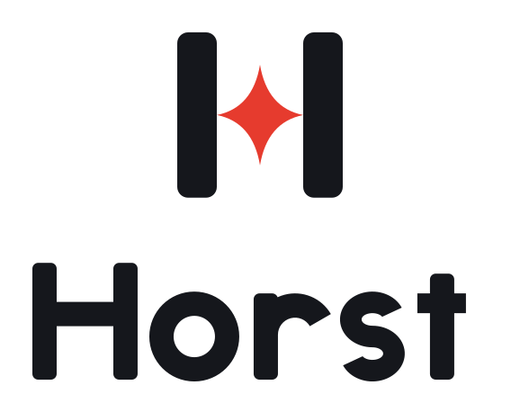
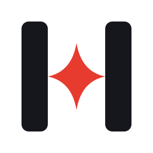
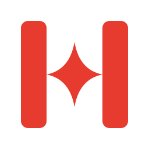

Logo
Der KI-Funke ist der Querbalken des H. Er verbindet die Stämme und ist der rote Korrekturstift.
Die Master liegen als SVG vor. Aus einer Quelle gebaut, daher immer identisch.
Versionen
Horizontal ist der Standard. Gestapelt, nur Symbol, nur Wortmarke und die Kleinversion (Symbol unter 32 px) gibt es für besondere Fälle. Dunkle Varianten stehen auf hellem Grund, helle (invertierte) auf Tinte.






Einfarbig
Schwarz, Weiß, Tinte und Korrekturrot als SVG und PNG. Auf Fotos die einfarbige Weiß- oder Schwarz-Version auf ruhiger Fläche verwenden.




Schutzraum und Größen
Rund um das Logo bleibt auf allen Seiten 1 × Stammbreite des H frei. Das sind ca. 24 % der Symbolhöhe und etwa der Abstand zwischen Symbol und Wortmarke im Lockup. Der Schutzraum wächst und schrumpft mit dem Logo.
Mindestgrößen
| Version | Bildschirm | Druck |
|---|---|---|
| Horizontal | 96 px breit | 25 mm breit |
| Gestapelt | 64 px breit | 18 mm breit |
| Symbol | 32 px (darunter horst-symbol-small) | 8 mm |
| Favicon / App-Icon | 16 px | – |
In Originalgröße gezeigt: die kleinsten erlaubten Maße auf dem Bildschirm.
Farben
Das Logo kennt zwei Farben: Tinte und Korrekturrot. Die Website ergänzt sie um Flächen- und Textfarben für den dunklen Stil.
Logo-Farben
Tinte
Stämme und Wortmarke auf hellem Grund; Grund für die invertierte Version.
- HEX
#15171C- RGB
- 21 · 23 · 28
- CMYK
- 75 · 65 · 55 · 85
- Pantone
- Black 6 C
- Kontrast
- auf Weiß 17,9:1
Korrekturrot
Der Funke, der rote Korrekturstift.
- HEX
#E63B2E- RGB
- 230 · 59 · 46
- CMYK
- 0 · 88 · 85 · 0
- Pantone
- 1788 C
- Kontrast
- auf Weiß 4,2:1 · auf Tinte 4,3:1
CMYK und Pantone sind Näherungen und vor dem Druck am Muster zu prüfen.
Freigegebene Paare
- Vollfarbe auf Weiß
- Invertiert (weiße Stämme, roter Funke) auf Tinte
- Schwarz auf Weiß
- Weiß auf Tinte oder Korrekturrot
Auf Fotos die einfarbige Weiß- oder Schwarz-Version auf ruhiger Fläche oder die Kachel (App-Icon) verwenden.
Farben der Website
Grund
Seitenhintergrund.
- HEX
#0E1014- RGB
- 14 · 16 · 20
- Kontrast
- Text darauf 17,0:1
Fläche
Karten und Felder.
- HEX
#181B22- RGB
- 24 · 27 · 34
- Kontrast
- Text darauf 15,4:1
Text
Überschriften und Fließtext.
- HEX
#F3F2EE- RGB
- 243 · 242 · 238
- Kontrast
- auf Grund 17,0:1
Roter Text auf dunkel
Roter Text und Links auf dunklem Grund.
- HEX
#FF6A5C- RGB
- 255 · 106 · 92
- Kontrast
- auf Grund 6,8:1
Rot für Flächen
Flächen und Schaltflächen mit weißer Schrift.
- HEX
#C42E22- RGB
- 196 · 46 · 34
- Kontrast
- weiße Schrift 5,6:1
Textmarker
Hervorhebungen und Fokusrahmen.
- HEX
#FFE45C- RGB
- 255 · 228 · 92
- Kontrast
- Tinte darauf 14,1:1
Schrift
Die Wortmarke ist eigens gezeichnet – aus Stämmen, Ringen und Bögen. Sie ist keine Schrift und nie neu zu tippen. Für Texte neben dem Logo passt eine freie, neutrale Groteske (z. B. Inter, OFL-Lizenz) oder die Systemschrift.
Schriften der Website
Beide Schriften stehen unter der SIL Open Font License und werden von dieser Website selbst gehostet.
Archivo
Von Grund auf, offen dokumentiert.
Aa Bb Cc Dd Ee Ff Gg Hh Ii Jj Kk Ll Mm Nn Oo Pp Qq Rr Ss ß Tt Uu Vv Ww Xx Yy Zz
Breit gesetzt (font-stretch 125 %), Gewicht 800. Fließtext in normaler Breite.
IBM Plex Mono
ich weis → ich weiß · 209 Mio.
0123456789 äöüß ÄÖÜ .,;:–„“
Für Zahlen, Werte, Code und Beschriftungen.
Bitte nicht
So wird das Logo nicht verwendet.
- Nicht
Funken in Tinte und Stämme in Rot färben.
- Nicht
Stämme dünner oder dicker ziehen, Funken drehen oder vergrößern.
- Nicht
Wortmarke tippen oder strecken. Sie ist gezeichnet.
- Nicht
Schatten, Verläufe, Konturen und Effekte.
- Nicht
Das Logo auf unruhige Hintergründe setzen.
- Nicht
Die Kleinversion über 32 px oder die Normalversion unter 32 px einsetzen.
- Nicht
Symbol und Wortmarke anders anordnen als in den Lockups.
Downloads
Alle Dateien der Marke auf einen Blick. Die SVG-Dateien sind die Vorlage, die PNG-Dateien sind für Programme ohne SVG-Unterstützung.
- Dateien
- 39zusammen 280 KB
- SVG
- 19Vektor, beliebig skalierbar
- PNG
- 2019 transparent, dazu das App-Icon
| Datei | Inhalt | Größe |
|---|---|---|
| Master (SVG): Vollfarbe und invertiert | ||
| horst-horizontal.svg | Horizontal | 1,2 KB |
| horst-horizontal-reversed.svg | Horizontal invertiert | 1,2 KB |
| horst-stacked.svg | Gestapelt | 1,3 KB |
| horst-stacked-reversed.svg | Gestapelt invertiert | 1,3 KB |
| horst-symbol.svg | Nur Symbol | 411 B |
| horst-symbol-reversed.svg | Symbol invertiert | 422 B |
| horst-symbol-small.svg | Kleinversion | 417 B |
| horst-symbol-small-reversed.svg | Kleinversion invertiert | 428 B |
| horst-wordmark.svg | Nur Wortmarke | 915 B |
| PNG aus den Mastern (transparent) | ||
| horst-horizontal-1200.png | Horizontal, 1200 px breit | 21,5 KB |
| horst-horizontal-reversed-1200.png | Horizontal invertiert, 1200 px breit | 17,9 KB |
| horst-stacked-800.png | Gestapelt, 800 px breit | 20,4 KB |
| horst-stacked-reversed-800.png | Gestapelt invertiert, 800 px breit | 17,1 KB |
| horst-symbol-512.png | Nur Symbol, 512 px breit | 8,6 KB |
| horst-symbol-reversed-512.png | Symbol invertiert, 512 px breit | 8,9 KB |
| horst-symbol-small-512.png | Kleinversion, 512 px breit | 8,2 KB |
| horst-symbol-small-reversed-512.png | Kleinversion invertiert, 512 px breit | 8,8 KB |
| horst-wordmark-1000.png | Nur Wortmarke, 1000 px breit | 18,4 KB |
| Einfarbig und Symbol quadratisch (SVG) | ||
| horst-horizontal-black.svg | Horizontal schwarz | 1,3 KB |
| horst-horizontal-white.svg | Horizontal weiß | 1,3 KB |
| horst-horizontal-mono-15171c.svg | Horizontal Tinte | 1,3 KB |
| horst-stacked-black.svg | Gestapelt schwarz | 1,3 KB |
| horst-stacked-white.svg | Gestapelt weiß | 1,3 KB |
| horst-symbol-black.svg | Symbol schwarz | 426 B |
| horst-symbol-white.svg | Symbol weiß | 426 B |
| horst-symbol-mono-15171c.svg | Symbol Tinte | 426 B |
| horst-symbol-mono-e63b2e.svg | Symbol Korrekturrot | 426 B |
| horst-symbol-square.svg | Symbol quadratisch | 492 B |
| Einfarbig und Symbol quadratisch (PNG) | ||
| horst-horizontal-black-1200.png | Horizontal schwarz, 1200 px breit | 15,1 KB |
| horst-horizontal-white-1200.png | Horizontal weiß, 1200 px breit | 16,8 KB |
| horst-horizontal-mono-15171c-1200.png | Horizontal Tinte, 1200 px breit | 21,3 KB |
| horst-stacked-black-800.png | Gestapelt schwarz, 800 px breit | 14,5 KB |
| horst-stacked-white-800.png | Gestapelt weiß, 800 px breit | 16,2 KB |
| horst-symbol-black-512.png | Symbol schwarz, 512 px breit | 7,5 KB |
| horst-symbol-white-512.png | Symbol weiß, 512 px breit | 7,9 KB |
| horst-symbol-mono-15171c-512.png | Symbol Tinte, 512 px breit | 8,5 KB |
| horst-symbol-mono-e63b2e-512.png | Symbol Korrekturrot, 512 px breit | 8,5 KB |
| horst-symbol-square-512.png | Symbol quadratisch, 512 px breit | 10,6 KB |
| App-Icon | ||
| horst-icon-512.png | App-Icon, 512 px (Web-App-Manifest) | 7,3 KB |